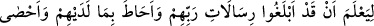
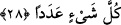
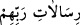

geçen istisnâdan anlaşılan mânâyı daha da açığa çıkarmak ve yerleştirmek için bunun
nasıl olduğunu yâni râzı olduğu peygamberine bu bilgiyi nasıl verdiğini açıklamaktadır.
Burada şöyle denmek isteniyor: “O gaybını kimseye göstermez, ancak seçip beğendiği
bir peygamber bunun dışındadır. Allah Teâlâ peygamberine gaybından herhangi bir bilgi
verirken onu dört bir yanından şeytanların taarruzundan korumak üzerek koruyucu
melekleriyle sarar, çevreler. Çünkü kendisine peygamberliğine dâir gaybî bilgiler
vermektedir.” Yâni Cebrâil risâlet ile indiğinde onunla birlikte muhâfız melekler
iniyordu. Bu melekler cinlerin Cebrâil’in ağzından vahyi duymalarına, bunu işbirliği
içinde oldukları kâhinlere vermelerine, kâhinlerin de o vahyi Peygamber Efendimiz’den
daha önce insanlara açıklayıp insanların ilâhî mesaj konusunda kafa karışıklığına
uğramalarına mânî oluyorlardır.
Kâşânî bu âyeti şöyle tefsir eder: “Ancak seçip beğendiği bir peygamber bunun
dışındadır.” Yâni seçip beğendiği, ilk fıtratta hazırladığı peygamber, kudsî kuvvet
peygamberinden seçip süzdüğü peygamber bundan müstesnâdır. “Çünkü onun önünden
ve arkasından gözetleyiciler koyar”. Bir başka ifâdeyle onun ilâhî tarafından ve
arkasından yâni bedeni tarafından kendisini koruyan gözetleyiciler koyar. Allah
tarafından koyduğu gözetleyici Ruhu’l-Kudus/Cebrâil’dir, melekûtî ve rabbânî nurlardır.
Beden yönünden konulan gözetleyici ise bütün itâat ve ibâdetlerinden elde edilmiş olan
nûrânî heyetler ve üstün melekelerdir. Bunlar kendisini cinlerin çarpmasından
korudukları gibi onun yakînî bilgilerine, kudsi mânâlarına, gaybî vâridatına ve gerçek
keşiflerine cinlerin vesvese, vehim ve hayallerinin karışmasına mânî olur, onu korurlar.
28. Ki böylece onların (peygamberlerin), Rablerinin gönderdiklerini hakkıyla
tebliğ ettiklerini bilsin. (Allah) onların nezdinde olup bitenleri çepeçevre kuşatmış
ve her şeyi bir bir saymıştır (kaydetmiştir).
İlk cümle, yukarda geçen “yesluku/koyar” fiiline bağlıdır. Yâni bir nevi o
gözetleyicilerin hangi maksadla peygamberin etrafına konulmuş olduklarını ifâde
etmektedir. Çünkü bu bilgiden maksad; tebliğe dâir ve fiil ile vücud bulan bilgidir.
Âyette yer alan “en”, “enne”nin şeddesiz olanıdır.
“İblâğ”, ulaştırmak, eriştirmek demektir.
“
/Rablerinin gönderdikleri” ifâdesi, seçilmiş ve beğenilmiş peygambere
açıklanması murâd edilen gaybe dâir bilgilerden ibârettir. Bunların “risâlât” şeklinde
çoğul getirilmesi, sayılarının çok oluşundan dolayıdır. Yine aynı âyette yer alan
“ebleğu” fiilinin fâili ya “gözetleyiciler” anlamına gelen “rasat” kelimesidir ya da
“seçip beğendiği kimse” anlamına gelen terkibdir. Birinci ihtimâle göre âyetin mânâsı